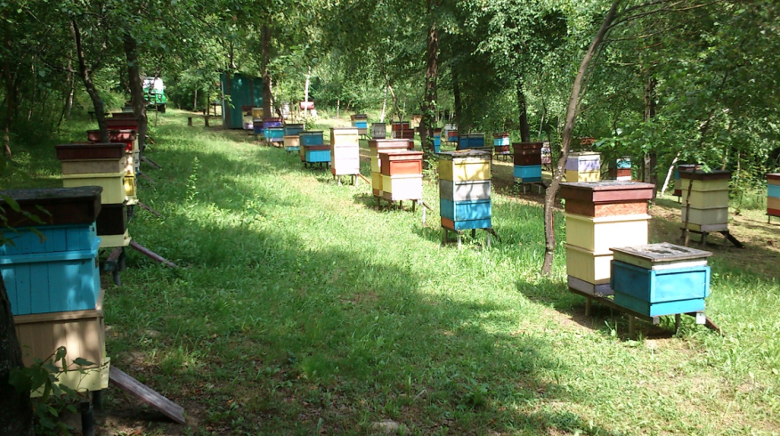
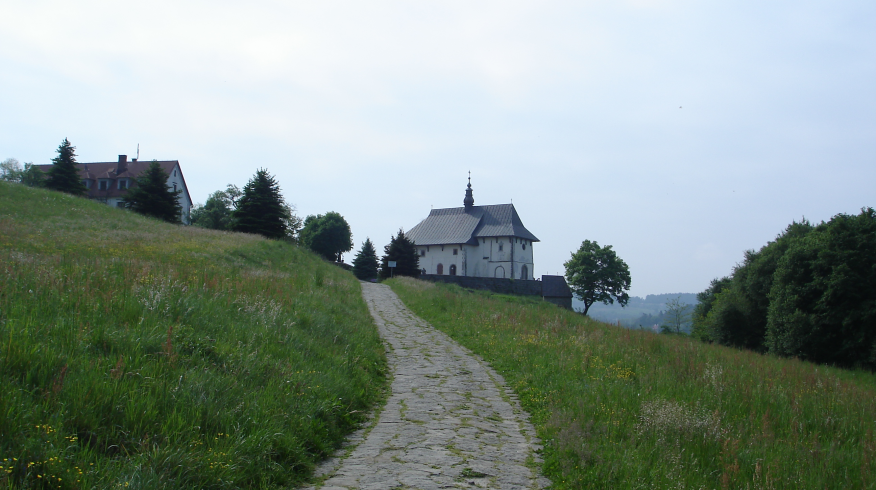
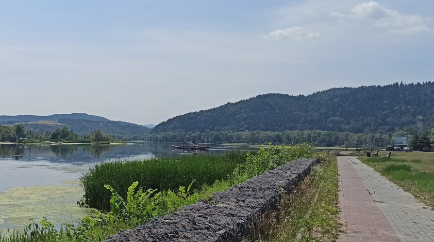
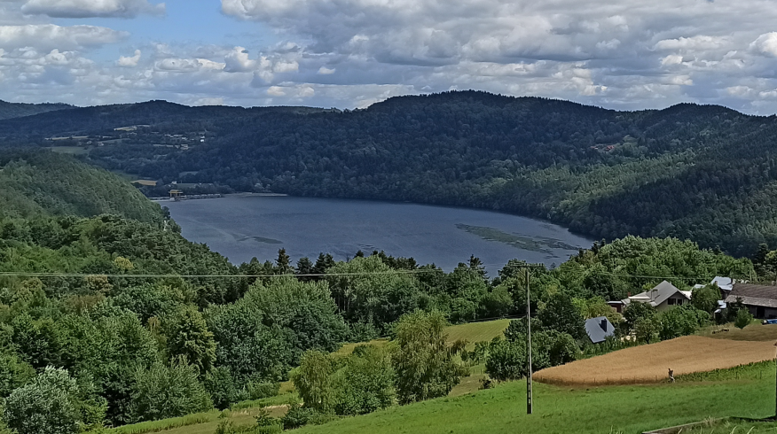

Pasieka APIGOR wita!

O nas i naszej okolicy
Jesteśmy rodzinnym gospodarstwem pasiecznym, istniejącym od ponad 40 lat. Nasza siedziba mieści się w Wytrzyszczce - miejsowości położonej na zachodnim brzegu Dunajca, a właściwie Jeziora Czchowskiego (zbiornika retencyjnego na Dunajcu).
Okolica jest wyjątkowo urokliwa i oferuje liczne atrakcje turystyczne, w tym tak spektakularne jak odbudowany z ruin zamek Tropsztyn, czy blisko tysiącletni kościół w Tropiu wraz z Pustelnią św. Świerada.

Niewątpliwą atrakcją (chociaż nie z punktu widzenia mieszkańców 😉) jest również przeprawa promowa w miejscu dawnego mostu, łączącego oba brzegi Dunajca, a zniszczonego podczas II Wojny Światowej. Oczywiście, prom miał być rozwiązaniem tymczasowym...

Walory turystyczne, w połączeniu z bardzo ruchliwą drogą krajową, łączącą Kraków z Nowym Sączem i Krynicą, która biegnie tutaj lewym brzegiem Dunajca, mogą sprawiać wrażenie, że jest to miejsce hałaśliwe i niespecjalnie sprzyjające pozyskiwaniu produktów pszczelich dobrej jakości. Jednak Wytrzyszczka ma dwa zupełnie różne oblicza.
Miejscowość ta, przy swojej niewielkiej liczbie mieszkańców, rozciąga się na bardzo rozległym terenie, w większosci porośnietym gęstymi, mieszanymi lasami. Siedziba Gospodarstwa Pasiecznego "Apigor" usadowiona jest tuż pod szczytem Głowacza (410 m n.p.m.) - góry wznoszącej się nad brzegiem jeziora - na jego północno-zachodnim zboczu. Ta spokojna, zaciszna i czysta okolica, z przepięknymi widokami, jest właśnie drugim obliczem Wytrzyszczki.

Sama pasieka położona jest w ustronnym, trudno dostępnym miejscu, otoczonym lasem, daleko od ruchliwych dróg. W pobliżu nie ma też zbyt wielu pól uprawnych. Okolica wolna od zanieczyszczeń i szkodliwej działalności człowieka, gwarantuje wysoką jakość pozyskiwanych u nas produktów pszczelich.
Gospodarstwo Pasieczne "Apigor" prowadzone jest przez Kazimierza Gorycę, wieloletniego, bardzo doświadczonego pszczelarza, założyciela pasieki i jego syna Jarosława Gorycę absolwenta Policealnego Studium Pszczelarskiego w Pszczelej Woli, z tytułem technika-pszczelarza. W prace pasieczne zaangażowana jest jednak w różnym stopniu, cała trzypokoleniowa rodzina.
Dokładamy wszelkich starań, aby pozyskując produkty z naszej pasieki, nie wpływać negatywnie na ich jakość i dostarczać klientom w stu procentach naturalne owoce pracy naszych pszczół. Jakość sprzedawanego przez nas miodu znajduje odzwierciedlenie w opiniach naszych stałych klientów.
Nasza oferta
Oferujemy państwu produkty pszczele, pochodzące wyłącznie z naszej własnej pasieki, wśród których wyróżnia się wyjątkowej jakości miód spadziowy ze spadzi iglastej.
Zapraszamy również na seanse inhalacji powietrzem z ula w Api-domku w Złotej.
Ofertę skierowaną do innych pszczelarzy stanowią matki pszczele, oraz odkłady.